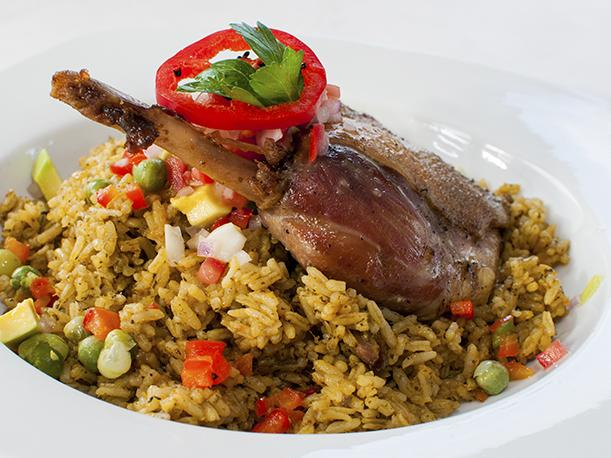

Arroz con Pato
09/04/2018, Lima 
El arroz con pato es una comida muy rica que tiene similitud al arroz con pollo y es uno de los favoritos por las personas. Es así que a continuación te damos la receta para que lo prepares en casa.
Ingredientes:
Modo de Preparación
- Sazone el pato con sal y pimienta. Fríalo en aceite durante siete minutos. Retire una vez dorado. En el mismo aceite fría la cebolla, el ajo, el ají amarillo molido, el culantro y cocine unos minutos. Vierta el pisco, el caldo y la cerveza.
- Incorpore el pato y cocine 35 minutos, retire y mantenga caliente. Añada la alverja, la zanahoria, un pimiento picado, el ají amarillo en tiras y el arroz. Una vez roto el hervor, baje el fuego y cocine de 15 a 20 minutos. Sirva el arroz con las presas de pato, adorne con el pimiento restante cortado en tiras.
!Ahora que sabes la receta, anímate a preparar este delicioso plato y disfrútalo en casa.!
Carlos: Que gran post, aprendi mucho sobre el arroz con pato
Roxana: Que gran post, aprendi mucho sobre el arroz con pato, es tiempo de prepararlo.
Lucas: Que gran post, aprendi mucho sobre ese arroz con pato, esta bueno para comerlo